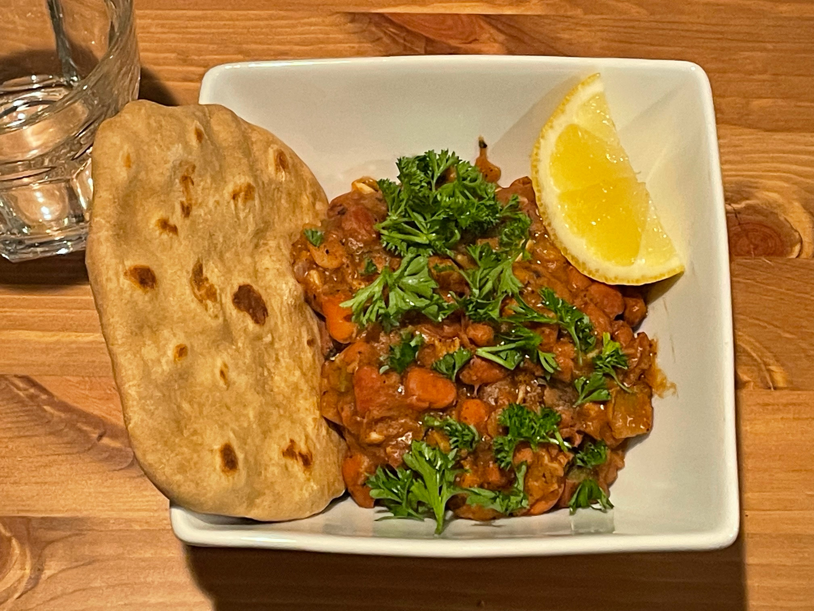

Pinto beans
Serving size: A couple servings
Beans served with roti, garnished with parsley and lemon
Ingredients
- Olive oil
- Red onions
- Tons of garlic
- Tons of ground cumin
- Chopped serrano peppers
- Canned pinto beans
- Lemon or lime juice
- Salt
- Oregano (optional)
- Ground black pepper (optional)
- Smoked paprika (optional)
Instructions
Cook aromatics in olive oil until fragrant, then add everything else. Cook on medium high heat until beans fall apart and smell beany. If the beans stick to the bottom of the pot and begin to burn, turn down the heat, add a bit of water, and scrape the bottom.